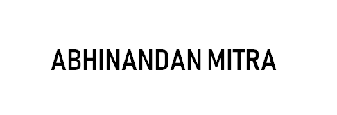

Raymadorian

Summary
Tech enthusiast consistently acquiring and improving web development skills....
Education
- Completed class 10 with above 80 percent from a catholic school
- Completed class 12 in science with above 70 percent from a third class government college
- Doing Undergraduate Computer Science from another third class government college
Work Experience
Absolutely no work experience in the realm of tech....
Skills
Unskilled enthusiast.....
Awards
Some worthless certificates and Martial Arts awards....
Hobbies
Contact